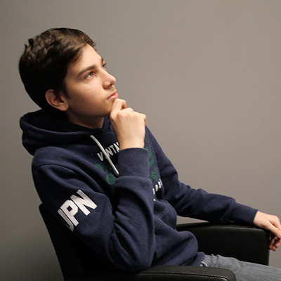
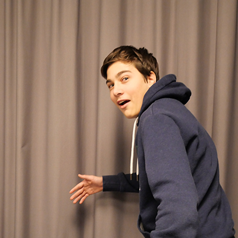
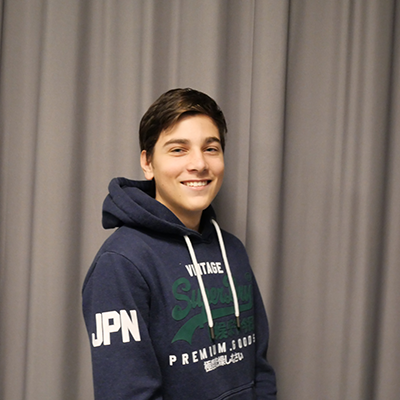

About me
 I grew up in Risløkka Oslo. the first school I went to was named Refstad but later
change name to løren. Its a long story so I wont explain why. Then I went to
Frydenberg ungdomskole. My sister also went to dose schools. She is so annoying,
but she can be nice to. I also have a mom and a dad. They dont live together withs
is a little bit bad, but they still talk so it doesnt bother me. On my free time I like to
play video games and be out whit friends. I also like to watch series and movies. My
free time is important to me. In my free time I get to be whit friends and do things I
like. I also get time to think about what I will do when I grow up. I donsst have any
goals or plans for my future. I would like to finish this school and while I do that I
will think about if I want to start working or get general study competence. But I like
to work whit computers and things like that.
I grew up in Risløkka Oslo. the first school I went to was named Refstad but later
change name to løren. Its a long story so I wont explain why. Then I went to
Frydenberg ungdomskole. My sister also went to dose schools. She is so annoying,
but she can be nice to. I also have a mom and a dad. They dont live together withs
is a little bit bad, but they still talk so it doesnt bother me. On my free time I like to
play video games and be out whit friends. I also like to watch series and movies. My
free time is important to me. In my free time I get to be whit friends and do things I
like. I also get time to think about what I will do when I grow up. I donsst have any
goals or plans for my future. I would like to finish this school and while I do that I
will think about if I want to start working or get general study competence. But I like
to work whit computers and things like that.





software skills
Html
30%
Java
33%
css
33%
Minecraft
99%
adobe
30%